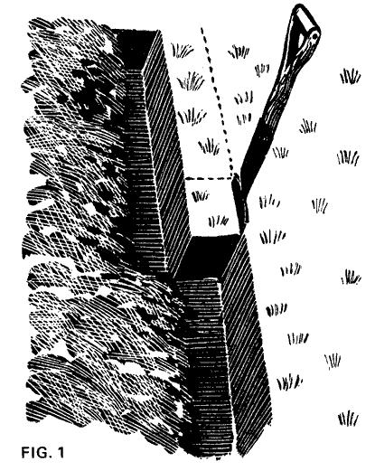
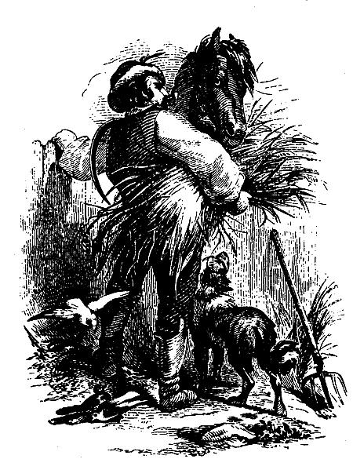
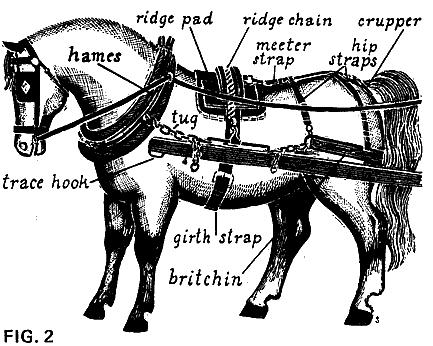

Farming For Self-Sufficiency-Independece On A 5-Acre Farm
March/April 1974
HORSE ...
In spite of the teachings of the no-digging and no-ploughing school of husbandmen, people still go on digging and ploughing, as they have done ever since Neolithic times, and my guess is that they will go on digging and ploughing as long as men live on this earth. For there is really no other way of effectively growing arable crops-at least, without the impracticable use of enormous quantities of compost.
Cobbett says, in Cottage Economy: 'As to the act of making bread, it would be shocking indeed if that had to be taught by means of books.' I would like to paraphrase that: 'as to the act of digging'. The only thing I will say about it, realizing that the flight from the cities is likely to include people who have practically never seen a spade, is that you should nearly always dig a trench: that is, remove one spit of soil (a spit is the wedge of soil cut by the spade) out in a furrow right across your piece of ground and dump it, then turn the next row of spits upside down into the furrow you have left. Thus you always have an open furrow in front of you to invert your spits into. When you come to the end of your piece you should, in theory at least, load the first lot of spits you dug out and dumped into a wheelbarrow and cart them back to fill up the empty furrow that has been left.
One way is to split your work down the middle and dig from alternate ends. You can then throw the first spit of each long narrow strip into the last furrow of the other. It is often admissible, however, to dig by inverting the spits in situ and not 'digging to a trench' when you are digging land over for the second time, or just loosening the soil around soft fruit bushes, or digging with a fork. But the serious self-supporter is likely to be more interested in growing food than in such counsels of perfection. But, in my experience at any rate, the more you dig the better, and it is better to dig badly than not dig at all.
If we wish to grow food on a larger scale, then there are three things we can do effectively. One is to buy an agricultural tractor. The other is go in for one of those little garden cultivators: either a rotovator or a mini-plough. The third is to plough by horse.
TRACTOR ...
In comparing these different methods of cultivating I will merely draw on my own experience. We have now a Ferguson diesel tractor which cost us $180.00 together with a fore-end loader, a link box, and a mounted spring-tine cultivator. For $180.00 we could not have got much of a garden cultivator which you can comfortably lift off the ground with one hand. We can always borrow from a neighbor a two-furrow plough to fit on the tractor (a good secondhand one from a farm sale would cost us about 25 dollars), and we could certainly plough very deeply.and well five acres in a day (if we were willing to spend a whole day doing one job, which we are not). This tractor will break up rough ground and bury any amount of rubbish as it ploughs; if it hits a boulder in our boulder-strewn glacial deposit of a farm, it just stops the tractor, and if the boulder is no bigger than I am it will lift it right out of the ground with its hydraulics. The spring-tine cultivator covers a lot of ground, therefore it is easy to make many passes with it, and it will pulverize the roughest soil and make a seed-bed. Or almost make a seed-bed-it is generally desirable to haul a set of light harrows, or a ring-roll, over the land after it, to make the tilt fine enough for small seeds. The tractor will work in a small garden both with the plough and the spring-tine cultivator-so long as the garden is quite empty of crops and unencumbered. It becomes difficult when there are patches of crop left which must be undisturbed, for the tractor takes room to maneuver.
I must explain here that Harry Ferguson revolutionized tractor work when he invented the three-point linkage (which has now been adopted on most tractors), and for the first time made it possible to use tractors in confined areas of ground. Hitherto a tractor hauled a set of plough shares mounted on wheels-like a kind of cumbersome gun-carriage being dragged along behind the tractor. The ploughs could (in some cases) be lifted out of the ground by locking the carrying bar to the wheels so that the turning of the wheels lifted the ploughs up into the air, and then the tractor could be turned fairly easily. But even so it was difficult to plough the headlands, impossible to plough into the corners, and impossible to plough right up against the hedge.
The three-point linkage changed all this, and made the big tractor a possible implement for using in small gardens. The plough was now mounted on three arms which stuck out of the back of the tractor, two of them activated by the hydraulics. Wheels are dispensed with, and the equipment is compact in the extreme. By pulling a lever the driver can whip the ploughs right out of the ground when it is easy to back the tractor into any odd corner and plough right up into the hedge. Most other implements can be three point mounted too, and thus used with the same ease and maneuverability. The three-point linkage undoubtedly saved what was left of the hedges of England, for it made it easy to plough right up to a hedge. In the old dragged-plough days ploughing small fields was intolerable, and farmers were bulldozing out their hedges to knock small fields into bigger ones as fast as they could. Now this process has been slowed down at any rate, if not stayed.
As to the costs, and general bother, of the big tractor, I have sorrowfully to report that my machine has cost me over its purchase price already in repairs. Being a diesel it is hard to start: if not used frequently its batteries get flat and the high compression engine is very hard to turn. I either have to leave it on top of a hill and run it down to start it, or else use a jump-lead from my car battery, and it canes that. Alternatively I take the tractor batteries out (and they are very heavy!) and put them on charge with a trickle-charger (yes, we now are on the electric mains). As for fuel oil for the diesel, to run it economically, in Britain at least, you will have to use duty-free oil. To obtain this you will either have to have your own large storage tank, or else buy at cost price from neighboring farmers. Diesel fuel you buy in garages is taxed, and nearly twice the money. But our tractor has many uses. It ploughs both field and large garden, it harrows the pastures, it hauls firewood from the forest, it cuts grass for hay, it turns and tedders the hay, it carries the bales, it pulls a muck-spreader that we borrow from a neighbor when we have a lot of muck to spread, or when we have a little it carries that little in its link-box-a kind of scoop that fits on to the three-point linkage. The fore-end loader has a fork attachment which will load muck into a muck-spreader very quickly indeed, or a dozer attachment which can be used for leveling land.
If you have anything over an acre of arable land it might well pay to get a big tractor, if you can buy one cheap. It might well pay to get a petrol-paraffin, or 'T.V.O.' one, for these are much easier to start (you can swing them by hand) and if they do cost a little more for fuel, well how much fuel will you use anyway on a small place? In using a farm tractor on a smallholding you are using a sledgehammer to crack a nut, but if you can get a sledgehammer for the price of a nut-cracker-and it does the job equally well or better-then maybe it is worth it. Our present holding is seventy acres, so, in the absence of time to do our work with horses; we need a large tractor.
GARDEN CULTIVATOR ...
Garden cultivators are a different thing altogether. The kind that pull ploughshares-unless they are very heavy ones-I would discount. They plough but I don't believe they plough very well. The rotovator kind are of two types. One, like the Howard, pulls itself along by its wheels and stirs the soil by means of the rotovator. Others, like the Merrytiller, have no power-driven wheels while they are rotovating, but shove themselves along with the rotovator itself.
The latter are harder work to handle but I believe they do a better job if you are comparing machines of the same size. The Merrytiller type of machine is excellent for inter-row cultivation, for keeping land clean between soft fruit trees, and for the initial clearing of small areas of ground. It is nimble, handy and cheap. The bigger wheel-propelled machines like the Howard are better for working large areas of land.
The consumption of fuel for all these machines is almost negligible, but the amount of ground they can get over in a day is comparatively small. To use them on a field scale is tedious beyond belief, and they make an awful lot of noise. If you like to hear the birds sing while you work (and for me that is very important) they are not for you.
HORSE ...
And so we come to the horse, and here many people who have not worked with horses, or seen them working, will say 'how absurd! You might as well go back to ploughing with oxen!' Well I have ploughed with oxen, and would very much like to do so again and may one day.
There is nothing wrong with ploughing with oxen at all. And as for horses-they have a great deal to be said for them.
PLOUGHING...
With two good horses it is possible to plough an acre of moderate land in a day. Your fuel need cost you nothing (at least nothing that has to come from outside the farm), you can hear the birds sing as you work, and will not be working in diesel or petrol fumes, and, if you have a good rapport with your horses, ploughing can be a delight. I don't believe there is a more entrancing occupation. And there is one little thing that a horse can do that a tractor can't, and that is to have another horse. A mare can work in chains (although not in shafts) to within a few hours of foaling. She foals in the spring, so can work the winter through, which is when you want to do your ploughing. After she has had her foal she must rest for six weeks at least, and then only come into her work gradually.
Now one horse will not plough an acre a day, nor will he plough very deep, or plough very rough ground. Nevertheless, one horse can very well do the cultivations of a smallholding. If the ground is too rough to put the plough into it, put pigs on it. They will pioneer the way for your one-horse plough for you. A horse will plough land very well that has not been allowed to go too far, but long tussocky grass, tough old pasture too coarse for sheep to graze down properly or rough grass between apple trees, your one-horse plough will not man use pigs, then get a contractor in with a big tractor. And then, when your land has been initially bust-up, keep it bust-up-by ploughing and ploughing with your one horse, or dragging through it such harrows and cultivators as you can lay your hands on. Keep 'pulling of it about': grass is the enemy of the plough: don't let it come back.
The kind of horse plough that we use nowadays, when we do use a horse plough (and one is very useful for row-crop work even if you have got a tractor), is the Brabant. We bought ours in Spain. This is a wheeled turning plough, or one-way plough, with no handles. You don't have to hold it, it steers itself as long as the horse walks in the furrow. All you have to do is turn it round at the headland and swing the shares over, so as to turn the furrow the other way. As the plough is also turned the other way that means that you go back ploughing the same way. Ploughing with a one way plough, whether by horse or by tractor, is much easier and demands less skill than ploughing with a fixed-furrow plough. But if you try ploughing with a fixed-furrow plough you will see the difficulty immediately, and have to set about finding a way round it. You must plough a furrow, then turn round and plough another furrow against the first. You then go round and round this, each time ploughing another furrow towards your first two furrows: gathering the stetch as ploughmen say. When you think you've gone far enough you can start another stetch by laying out another top-in other words, going to one side into unploughed ground and ploughing two more virgin furrows leaning up against each other. The Horse in the Fur row, by George Ewart Evans (Faber and Faber), is the best book I have ever found dealing with this complicated subject, but no book in the world can beat half an hour's instruction from an old horseman. Good ploughing with horses is a highly skilled and technical job, and it takes years to learn to do it properly, but anybody can scratch away with a plough well enough to turn his land over somehow or other. Perfection will come with time.
Other implements you can pull with a horse are many and various. A ring-roll or Cambridge roll is a very good thing to have; the rings can be bought separately and made up to any width required. Cultivators, scufflers, expanding horseshoes and steerage hoes come in great variety. An implement I like is the old fashioned hoop-hoe, which any blacksmith can make. The spring toothed harrow is a marvelous implement. A tractor normally tows a gang of these: a horse will easily pull just one member of the gang and you can adjust the depth at which the tines go down into the soil. These spring-toothed harrows are easy of draught and marvelous at pulling down clods and getting a seed bed, and you can often get them at farm sales.
Digging by hand, or hoeing by hand, are immensely slow and laborious jobs. Cobbett, writing in 1820, claimed that a man could dig with the spade twelve rods a day. A modern man could not dig anything like so much, and 1 am fairly certain that no man reared in a city could do a quarter of it. A one-horse plough might very well do half an acre in a day, or eighty rods. That is the difference. As for hoeing, the difference is far greater: what would take a week to hand-hoe can be done in an hour or two with a horse-hoe. But mark, you will also have to hand-hoe your row crops in the end no matter how many times you horse or tractor hoe them. This is because no mechanical device can get in between the plants in the rows, nor tell the difference between a- weed and a plant. But a working horse lightens the job of husbandry enormously; he really enables you to get on top of your holding. As to where you can get all these horse implements: well, up to now, farm sales have been the answer. Up until 1970 anyway you could get practically any horse implement you wanted, in Britain at least, for a few shillings. Now people are beginning to buy up horse ploughs to stick up outside pubs and the market is wearing thin. Ireland, incidentally, is a richer source of old horse tools than is England, and in France or Belgium you can still get anything you want in this line new: although God help you when you try to get it through the British customs.
HARNESS...
One thing you have to have with a horse, of course, is harness. This you used to be able to buy up at farm sales for a few pennies or sometimes get for nothing; now if it is any. good it is snapped up and hung on a pub wall. You can get good harness, new or secondhand, on the Continent still, or in Eire, and Spain makes some of the best harness in the world, and the cheapest. The imagination boggles at trying to get past the British customs though. If you can use a needle you can do a lot in the way of repairing old harness, but if the leather has perished then it is useless. Harness hung up on pub walls for a year or two is ruined: one thing leather can't stand is drying out. Harness must have oil: not too much but enough. In South Africa we used to use mutton fat, and it worked very well. In Britain people generally use neat's foot oil. You should oil or grease the grain side-that is the rough inside of the leather, but wash the polished outside of the leather with water and saddle soap. It seems a general rule that animal fats and oils are better for animal products, vegetable for vegetable (e.g., linseed oil for cricket bats) and mineral for mineral (e.g., mineral oil for motor cars). Wet is the enemy of leather, but oil keeps it out. Heat is a worse enemy: to dry harness on a radiator is to kill it stone dead.
You must get somebody to show you how to put the harness on the horse. There are certain principles that have to be considered. Forward power is transmitted from the horse by the tugs (see Fig. 2). If the horse is working in chains (i.e., pulling a plough or such instrument) the chains go straight to the collar, from a whippletree. The latter is a 'spreader' of wood or iron that keeps the chains apart so that they don't pinch the horse. A back-strap can go over the horse's back to keep the chains from sagging and getting under his hind legs when he stops. This strap should be long enough to allow the chains to be straight when the horse is pulling. When the horse is in shafts the ridge pad (like a saddle) supports the ridge chain which holds the shafts up and also takes any weight which is on the shafts owing to a two-wheeled cart being front-heavy. The girth strap goes under the belly of the horse to prevent the cart falling over backwards if it is back-heavy. The britchin goes round the horse's buttocks and is chained on to the shafts to keep the cart back if the horse is going downhill, or to back the cart. So with shafts there are just three chains to hook on one side of the horse, and two the other. The order of hooking them on ('shutting the horse in' or 'putting him in') is: go to the off side (right side) of the horse, hook the tug on, throw the ridge chain over, hook the britchin chain on. Go to the other side-hook the ridge chain on, then the britchin. See that the britchin is not too tight so that it worries the horse, but is not too slack either, for if it is the front of the cart will shove against the horse's backside when you go downhill and annoy him. See that the shafts are a comfortable height and length and don't pinch the horse, or poke him in the face when you are turning. If the tugs are correctly adjusted you should be able to produce an imaginary line from them, going backwards, and this line should pass through the hubs of the wheels. I don't think anybody should try to harness a horse unless they have been shown how but if you have to, remember that you must take the ham off the collar, or at least loosen them, and put the collar on upside down, and then reverse it and put the hames on. Generally you must do this with the bridle off the horse, or the collar won't go on over it.
FEEDING AND MANAGEMENT ...
With the little work you will have to do on a very small holding, if the horse gets plenty of grass, you will hardly have to feed him at all. When the horse is not working he will live on grass alone, and don't give him too rich grass either (particularly if he is a pony) or he will get ill. In the winter, if grass is short, you must give him more or less hay according to how much grass there is. If you work a horse at all hard you must give him other things besides grass. Hay is better than all-grass for a working horse. Grass makes a horse soft. Hay keeps him hard. The hay must be good if you feed it to horses: dusty or mouldy hay is dangerous. All-clover hay is bad too, except for nursing mothers. Oat straw can be a substitute for hay, and I have fed horses most successfully on oats in the sheaf: that is one sheaf a day of unthreshed oats. They eat it straw, corn, and all. O.M.C.S. (Old Mother Common Sense) will tell you to take the string out.
If the horse is working hard though you must pay him with oats, crushed maize or other corn. A big plough horse, working a full day, needs as much as 20 Lbs. of oats or other corn a day. For light work perhaps half that. A cob, say of 5 feet, would do with perhaps three or five pounds for light work, ten for heavy continuous work, plus hay, and/or straw. Bran is also good. Eight to ten pounds of hay is about right, with no grass: less with grass. Feeding should be at least three times a day, and the horse should be given plenty of time to eat: at least a full hour. A working horse should be groomed once a day. When the horse is not working he should not have corn, or if he does only a very little. If you rest a hard-working horse you must knock off his corn, otherwise he will get ill.
You must shoe your horse about once every six weeks, whether you are working him or not. If you turn him out to grass for a long period you had better pull the shoes off him: if you leave them on, his feet will go on growing under the shoes and he will go lame. Shoeing is a highly skilled job and no unskilled person should tackle it. The demand for the service of shoeing smiths is now insatiable, in Britain at least, and this is a very good and profitable profession for a young man to go in for. You get two pounds per horse, and should easily be able to do ten in a day: twenty pounds a working day and no rat-race is not to be sneezed at: see if you can earn that by getting a degree in philosophy.
BREEDING ...
The profitability of the smallholding horse can be increased enormously if she is a good mare, and used for breeding as well as work. Your mare may do any work for the first six or seven months of pregnancy: then she should only work in chains, for the shafts are uncomfortable for her. She can be worked, with advantage to her health, right up to foaling: many a mare has dropped her foal in the field in which she has been ploughing, with no ill results.
After foaling the mare should be pampered a bit: a nice warm bran mash for example, some oats, and she should be turned out on to good fresh grass: if possible on which no horses have been grazing for some time. She should not be worked at all for at least six weeks, and then only be given very light work for a few hours a day up to the time of weaning. Before weaning she should not be kept away from the foal for more than two or three hours. Weaning can be at four months, but the later the better for the foal. When you wean the foal you must keep him out of hearing of the mare, on very good pasture, and then start working the mare as hard as you like to help dry her milk off. Good summer grass is ample for the foal, but when the first winter comes you should give him perhaps a couple of pounds of crushed oats and three or four pounds a day of good hay. If you want a gelding get the vet, or a wise man, to come and castrate him at about a year old, when the weather has become milder after the winter but before the flies are about. Foals on pasture should have their hoofs rasped down every so often, so that the frog (the soft bit in the middle) just rests on the ground.
The sooner you halter-break the foal the better. Get a rope halter on at a few days old, and teach the foal to be led and not be afraid of people. Get him used to having his feet lifted. You can begin to break him for work in his second summer (one assumes he was born in the spring). Breaking should be a gradual but firm process. Keep him in for a time (nothing tames a horse, or gets him used to humans, so much as being kept inside), handle him a lot, get him used to wearing harness, trotting round on a leading rein (if you are going to ride him he should have a mouthing bit and a breaking harness for a week or two), then try him in chains in front of something that doesn't matter, such as a set of harrows.
PASTURE ...
Horses living out don't want very good fattening pasture. It is bad for them. The wider range of grazing they have the better, and they do not thrive on land where only horses are kept. They do far better running out either with, or after, cattle. A horse kept out all the time and worked occasionally and lightly is most unlikely to get ill. One worked hard and continuously must be stabled and fed 'high', and it takes a skilled horseman to keep him fit and working. You are being forced to keep him unnaturally, i.e., on food that is richer than his digestion was evolved to cope with. But a horse out on grass should give you very little trouble, if any at all.
BUYING A HORSE ...
There is no mystery about this-if you want to do really heavy work, perhaps till a farm of fifty or a hundred acres or more with horses, you will have to buy proper heavy horses, Shires, Clydesdales, Percherons or Suffolks. Personally I should never have any hesitation-I should plump for Suffolks. They are the kindest, most noble, and most beautiful animals that ever walked. But if you just want to pull a one-horse plough get a good strong cob. Go to a horse sale and buy one, or to a good dealer who won't cheat you. Have a vet look at him first if you feel like it. At a reputable horse sale animals are 'sold sound'-that is you have a come-back if there is anything wrong with the animal. Do not, until you are an expert, buy a horse from anybody but a man with a reputation to lose unless you have the animal vetted. If you are a beginner buy a fairly old horse already broken and trained. You don't want both to be learners. If you have a good horse, and are kind to him, and work a lot with him, you will get very fond of him and he will of you. He will be a source of great pleasure to you. He will be pleased to see you and will try to please you. And he will cultivate your large garden or small fields as well as any tractor and better in many ways.
To compare the pros and cons of these three main sources of power on the smallholding, farm tractors, garden cultivators and horses, we end up with this: A secondhand farm tractor is immensely good value for what it is, because a tractor that is too old for a full-size farm is not too old for doing occasional odd-jobs on a smallholding, and also that sometimes the government subsidizes farmers who buy new tractors whereupon they sell their old ones long before they need to.
It will cope with any of the cultivation jobs in the field, will cultivate even in fair-sized gardens, but is not as good as either garden cultivator or horse at doing row-crop work or working in confined spaces. Any fool can use it. The garden cultivator may cost as much, new, as an old farm tractor, and beware of getting an old garden cultivator unless you know that there is a very good reason for its being for sale. They wear out. It is infinitely slower than a farm tractor, won't really plough (unless it is a very big one), is fine for row crops, no good for transporting things, and any fool can use it.
The horse costs about as much as the secondhand farm tractor or the new garden cultivator. If you have enough land you can feed him for nothing, and if she is a mare she may give you foals. These can be a very valuable export item. A horse will cover ground much more slowly than a farm tractor but much faster than a garden cultivator. He is very good for row crops and for transport. Working with a horse can be a delight but the horseman must be a sensitive and intelligent man. The horse is no tool for fools, and no fool can use him.
Come all ye honest ploughmen
Old England's fate you hold
Who labour in the winter time
In stormy winds and cold
To clothe our fields in plenty
Our farmyards to renew
That bread may not be wanting
Behold the painful plough!
The townsman in his turmoil
The gentleman at ease
Forget the gal/ant sailor
Who ploughs the raging seas
But we do give him sustenance
And this he knows be true
He sails upon the Ocean
By virtue of the Plough. 9
Copyright © 2001-2002, Ogden Publications, Inc.
All rights reserved.
 OLD SONG... Come all ye honest ploughmen, Old England's fate you hold! |
 |
 |
|
 |
|
|